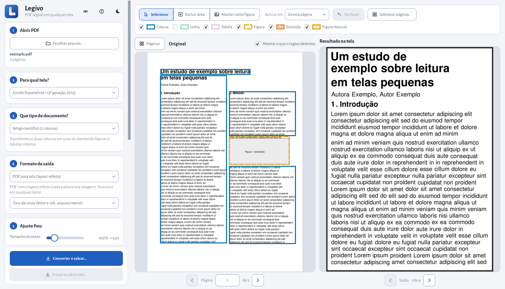
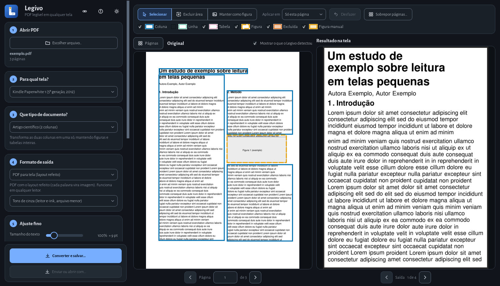

PDF legível
em qualquer tela
O Legivo refaz o layout de artigos científicos, provas e livros de RPG de várias colunas para ficarem confortáveis no Kindle, no tablet ou com letra grande. Você vê o resultado na hora, antes de converter.
Grátis, offline e de código aberto (GPL-3.0). Nada sai do seu computador.


Para quem lê PDF em tela pequena
Documentos feitos para papel viram colunas minúsculas no e-reader. O Legivo reorganiza o texto para a largura da sua tela.
Artigos e provas
Duas colunas viram uma, mantendo figuras, tabelas e a ordem certa de leitura. Alternativas e campos de preencher ficam intactos.
Livros de várias colunas
Caixas laterais, tabelas, mapas e fundos decorados tratados como blocos, sem perder a legibilidade.
Baixa visão
Letra bem maior, alto contraste e uma coluna só. Dá para ampliar provas e documentos sem quebrar o layout.
O que ele faz
Menos parâmetros misteriosos, mais controle visual.
Prévia ao vivo
Original com as regiões detectadas ao lado do resultado na tela do seu aparelho, com miniaturas de todas as páginas.
Edição manual
Exclua cabeçalhos e números de página (há sugestão automática), marque uma região como figura e corrija o que o programa errou.
PDF ou EPUB de verdade
No EPUB o texto continua texto, com títulos, índice, figuras e tabelas reais. O aparelho escolhe o tamanho da letra.
OCR offline
Reconhece PDFs escaneados, com acentos, sem enviar nada para a internet.
Calibre, KOReader, Kindle e Kobo
Envie por Wi-Fi ou USB, ou adicione direto à biblioteca do Calibre.
Portátil e privado
Funciona de uma pasta ou instalado, sem conta. Temas claro e escuro, com cores seguras para daltonismo.
Como usar
Abra o PDF
Arraste o arquivo para a janela ou use “Escolher arquivo”.
Escolha a tela e o tipo
Kindle, Kobo, A4... e artigo, prova, RPG ou baixa visão.
Confira e salve
Veja o resultado ao vivo, ajuste o que quiser e converta para PDF ou EPUB.
Baixar
Windows 10 ou 11 (64 bits). Linux e macOS: rode pelo código-fonte, por enquanto.
Instalador
Instala só para você, sem pedir administrador, com atalho no menu Iniciar.
Versão completa, com OCRBaixar o instaladorPortátil
Extraia a pasta onde quiser (até num pen drive) e abra o Legivo.exe.
Versão completa, com OCRBaixar o .zipLite
Igual, mas sem o OCR para PDFs escaneados. Bem menor para baixar.
Sem OCRBaixar a versão liteDúvidas
O Windows mostrou “O Windows protegeu o computador”. É seguro?
Esse aviso (SmartScreen) aparece para programas sem assinatura digital paga e pouco baixados. O código é aberto e pode ser conferido no GitHub. Clique em “Mais informações” e depois em “Executar assim mesmo”.
Meus PDFs são enviados para algum lugar?
Não. Todo o processamento é local. A única conexão do programa é, ao abrir, perguntar ao GitHub se há versão nova (dá para desligar na tela Sobre).
Por que o programa é grande?
Ele leva dentro o Python e a interface Qt (e, na versão completa, o OCR). A versão lite deixa o OCR de fora e fica bem menor.
Funciona em Linux ou macOS?
Ainda não há versão pronta, mas o código evita recursos só do Windows e roda pelo código-fonte (veja o README).
Achei um PDF que sai errado.
Abra uma issue contando o tipo de documento e a página. Isso ajuda a melhorar o reconhecimento.